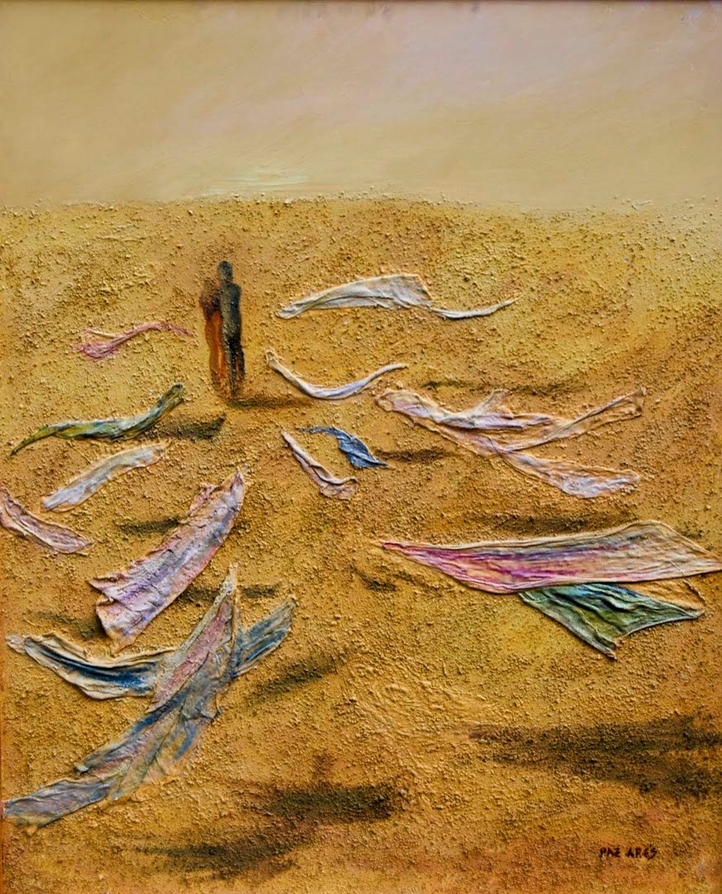

Ficha Técnica Technical Sheet Scheda Tecnica Техническая карта 技术参数 ورقة البيانات التقنية Technisches Datenblatt Fiche technique テクニカルデータ Ficha Técnica
- Técnica: Técnica mixta incluyendo acrílico, tela de escayola y polvo de mármol. Technique: Mixed media including acrylic, plaster cloth, and marble dust. Tecnica: Tecnica mista che include acrilico, stoffa in gesso e polvere di marmo. Техника: Смешанная техника (акрил, гипсовая ткань и мраморная пыль). 技法：混合材料，包括丙烯、石膏布和大理石粉。 التقنية: تقنية مختلطة تشمل الأكريليك وقماش الجص ومسحوق الرخام. Technik: Mischtechnik (Acryl, Gipsgewebe und Marmorstaub). Technique : Techniques mixtes (acrylique, toile de plâtre et poudre de marbre). 技法：アクリル、石膏布、大理石の粉末を含むミクストメディア。 Técnica: Técnica mista incluindo acrílico, tela de gesso e pó de mármore.
- Tamaño: 100x80 cm Size: 100x80 cm Dimensioni: 100x80 cm Размер: 100x80 см 尺寸：100x80 厘米 الحجم: 100x80 سم Größe: 100x80 cm Taille : 100x80 cm サイズ：100x80 cm Tamanho: 100x80 cm
- Lugar de Creación: Facultad de Bellas Artes en Madrid Creation Place: Fine Arts School of Madrid Luogo di Creazione: Accademia di Belle Arti di Madrid Место создания: Факультет изящных искусств в Мадриде 创作地点：马德里美术学院 مكان الإنشاء: كلية الفنون الجميلة في مدريد Entstehungsort: Fakultät für Schöne Künste in Madrid Lieu de création : Faculté des Beaux-Arts de Madrid 創作場所：マドリード美術学部 Lugar de Criação: Faculdade de Belas Artes de Madrid
- Ubicación Actual: Colección Privada. No disponible en mercado, pero se valoran ofertas superiores a 100.000 € por quienes honren su significado artístico. Current Location: Private Collection. Not for sale on open market, but serious offers over €100,000 from collectors honoring its meaning are valued. Ubicazione Attuale: Collezione privata. Non in vendita, ma si valutano offerte superiori a 100.000 € da parte di chi ne onora il significato. Текущее положение: Частная коллекция. Не продается на открытом рынке, но рассматриваются предложения свыше 100 000 € от ценителей её смысла. 当前位置：私人收藏。不在公开市场出售，但会慎重考虑珍视其艺术意义并出价100,000欧元以上的藏家。 الموقع الحالي: مجموعة خاصة. لا تعرض للبيع ولكن ستؤخذ في الاعتبار عروض تزيد عن 100,000 يورو من قبل من يقدّرون معناها الفني. Aktueller Standort: Privatsammlung. Nicht verkäuflich, aber Angebote über 100.000 € von Sammlern, die ihre künstlerische Bedeutung ehren, werden erwogen. Emplacement actuel : Collection Privée. Non disponible sur le marché, mais les offres supérieures à 100 000 € émanant d'amateurs honorant sa signification sont étudiées. 現在の場所：プライベートコレクション。一般市場では非売品ですが、その芸術的意義を深く理解される方からの10万ユーロ以上のオファーは検討します。 Localização Atual: Coleção Privada. Indisponível no mercado, contudo valorizam-se ofertas superiores a 100.000 € procedentes daqueles que honrarem a sua essência.
Análisis Crítico Critical Analysis Analisi Critica Критический анализ 批判性分析 التحليل النقدي Kritische Analyse Analyse Critique 批評的分析 Análise Crítica
"Desvelamiento", la obra que continúa y resuelve el diálogo visual iniciado en "Revelación", lleva al espectador al esperado clímax de la narrativa. Donde "Revelación" representaba la ocultación y la introspección bajo apretados turbantes y velos, "Desvelamiento" brilla como el acto liberador de descubrimiento y exposición. La artista teje la historia de una transformación metamórfica: los vientos han arrancado finalmente las ataduras de tela, que ahora yacen esparcidas por la arena seca en una vibrante danza de colores pastel lavados.
La técnica de textura mixta permanece fiel al estilo distintivo de Osset. El polvo de mármol y la tela de escayola impregnan la escena con una sensación táctil que añade una dimensión de aspereza en la tierra (pintada con tal habilidad que hace sentir el sofocante calor del desierto), contrastando agudamente con la suavidad de los velos y la fragilidad de la piel expuesta. Esta dualidad textual realza el dramatismo del desvelamiento: el abandono categórico de la rigidez en favor de la existencia auténtica.
La figura solitaria en la distancia habla de un viaje que continúa incluso después de que las máscaras han caído. La paleta de colores resalta los velos multicolores, enfatizando el contraste entre la libertad y el aislamiento. Estos velos abandonados aluden a un nuevo amanecer y sugieren un profundo alivio emocional, como si cada tejido desechado aliviara un enorme peso del alma de los caminantes, revelando posibilidades en la luz del conocimiento adquirido.
Este cuadro, "Desvelamiento", no es solo un eco de la búsqueda de la verdad; es la afirmación gozosa de haberla encontrado. La desnudez expuesta es una declaración audaz y triunfante, una proclamación de que la vulnerabilidad no es debilidad, sino la forma más pura de fuerza. En su estado desprotegido y auténtico, la humanidad redescubre su armonía intrínseca, libre por fin de la carga de las expectativas y pretensiones sociales, abriendo paso a una existencia guiada por el resplandor indiscutible de nuestra propia claridad y amor verdadero.
El caleidoscopio de colores bajo lo que se interpreta como la luz del entendimiento baña la escena con un optimismo cauteloso. No simboliza solo el final de un viaje, sino el inicio heroico de una etapa de crecimiento y exploración personal hacia la aceptación. En esta escena vemos la belleza de la evolución, la promesa de lo que florece al soltar las capas para reunirse para siempre con la verdad desnuda.
La pareja al centro-izquierda se muestra ahora completamente desnuda y despojada de sus barreras físicas, miedos infundados y expectativas culturales. Esta desnudez va más allá de lo carnal; representa un estado de extrema honradez y sinceridad emocional. Es un triunfo invencible del espíritu, el genuino coraje de enfrentarse al mundo en la esencia más pura, revelando una armonía inherente entre el ser humano y la naturaleza que solo aflora al derribar los muros artificiales.
La textura de la arena, lograda mediante esta técnica, contrasta con los cuerpos lisos y los velos sueltos, sugiriendo el arraigo físico en contraposición con la liberación espiritual. La figura que se aleja puede simbolizar el pasado que se deja atrás, las viejas versiones de uno mismo o de la sociedad, que continúan su camino mientras nos detenemos para revelar y reconocer nuestra verdad desnuda.
Emocionalmente, "Desvelamiento" es una odisea de alivio y renacimiento. Ofrece a quien la observa una pausa reflexiva: un espejo ante el cual uno puede cuestionar sus propios velos y la posibilidad liberadora de dejarlos caer, animando a un viaje personal hacia una existencia más abierta, lúcida y desprovista de miedos y prejuicios. Ambas composiciones nos invitan a reflexionar seriamente sobre las múltiples máscaras forzadas que solemos usar cada día, celebrando sin tapujos la sanadora euforia que experimentamos cuando nos atrevemos a presentarnos ante la inmensidad en nuestra forma más verdadera y plena.
"Desvelamiento", the work that continues and resolves the visual dialogue begun in "Revelation", takes the viewer to the expected climax of the narrative. Where "Revelation" represented concealment and introspection under tight turbans and veils, "Unveiling" shines as the liberating act of discovery and exposure. The artist weaves the story of a metamorphic transformation: the winds have finally torn away the cloth bindings, which now lie scattered across the dry sand in a vibrant dance of washed pastel colors.
The mixed texture technique remains true to Osset's distinctive style. The marble dust and plaster cloth imbue the scene with a tactile sensation that adds a dimension of harshness to the earth (painted with such skill that it makes one feel the stifling heat of the desert), contrasting sharply with the softness of the veils and the fragility of the exposed skin. This textual duality enhances the drama of the revelation: the categorical abandonment of rigidity in favor of authentic existence.
The lone figure in the distance speaks of a journey that continues even after the masks have fallen. The color palette highlights the multicolored veils, emphasizing the contrast between freedom and isolation. These abandoned veils allude to a new dawn and suggest a deep emotional relief, as if each discarded fabric relieved an enormous weight from the souls of the walkers, revealing possibilities in the light of acquired knowledge.
This painting, "Unveiling," is not only an echo of the search for truth; It is the joyful affirmation of having found it. Exposed nudity is a bold and triumphant statement, a proclamation that vulnerability is not weakness, but the purest form of strength. In its unprotected and authentic state, humanity rediscovers its intrinsic harmony, finally free from the burden of social expectations and pretensions, making way for an existence guided by the indisputable radiance of our own clarity and true love.
The kaleidoscope of colors under what is interpreted as the light of understanding bathes the scene in cautious optimism. It not only symbolizes the end of a journey, but the heroic beginning of a stage of personal growth and exploration towards acceptance. In this scene we see the beauty of evolution, the promise of what blossoms as you drop the layers to forever reunite with the naked truth.
The couple on the center-left are now shown completely naked and stripped of their physical barriers, unfounded fears and cultural expectations. This nudity goes beyond the carnal; It represents a state of extreme honesty and emotional sincerity. It is an invincible triumph of the spirit, the genuine courage to face the world in its purest essence, revealing an inherent harmony between human beings and nature that only emerges when breaking down artificial walls.
The texture of the sand, achieved through this technique, contrasts with the smooth bodies and loose veils, suggesting physical rootedness as opposed to spiritual liberation. The receding figure can symbolize the past being left behind, the old versions of self or society, continuing on their path as we pause to reveal and acknowledge our naked truth.
Emotionally, "Unveiling" is an odyssey of relief and rebirth. It offers those who observe it a reflective pause: a mirror before which one can question their own veils and the liberating possibility of letting them fall, encouraging a personal journey towards a more open, lucid existence devoid of fears and prejudices. Both compositions invite us to seriously reflect on the many forced masks that we usually wear every day, openly celebrating the healing euphoria that we experience when we dare to present ourselves before immensity in our truest and fullest form.
"Desvelamiento", l'opera che continua e risolve il dialogo visivo iniziato in "Revelation", porta lo spettatore al climax atteso della narrazione. Laddove "Rivelazione" rappresentava l'occultamento e l'introspezione sotto stretti turbanti e veli, "Unveiling" brilla come l'atto liberatorio di scoperta ed esposizione. L'artista tesse la storia di una trasformazione metamorfica: i venti hanno finalmente strappato le legature di stoffa, che ora giacciono sparse sulla sabbia asciutta in una vibrante danza di colori pastello lavati.
La tecnica della trama mista rimane fedele allo stile distintivo di Osset. La polvere di marmo e la tela di gesso infondono alla scena una sensazione tattile che aggiunge una dimensione di asprezza alla terra (dipinta con tale maestria da far sentire il caldo soffocante del deserto), in netto contrasto con la morbidezza dei veli e la fragilità della pelle esposta. Questa dualità testuale esalta la drammaticità della rivelazione: l'abbandono categorico della rigidità a favore dell'esistenza autentica.
La figura solitaria in lontananza parla di un viaggio che continua anche dopo che le maschere sono cadute. La palette cromatica mette in risalto i veli multicolori, sottolineando il contrasto tra libertà e isolamento. Questi veli abbandonati alludono a una nuova alba e suggeriscono un profondo sollievo emotivo, come se ogni tessuto scartato alleggerisse un peso enorme dalle anime dei camminatori, rivelando possibilità alla luce della conoscenza acquisita.
Questo dipinto, "Unveiling", non è solo un'eco della ricerca della verità; È la gioiosa affermazione di averlo trovato. La nudità esposta è un’affermazione audace e trionfante, una proclamazione che la vulnerabilità non è debolezza, ma la forma più pura di forza. Nel suo stato non protetto e autentico, l'umanità ritrova la sua intrinseca armonia, finalmente libera dal peso delle aspettative e delle pretese sociali, lasciando il posto a un'esistenza guidata dall'indiscutibile splendore della nostra stessa chiarezza e del vero amore.
Il caleidoscopio di colori sotto quella che viene interpretata come la luce della comprensione inonda la scena di cauto ottimismo. Non simboleggia solo la fine di un viaggio, ma l'inizio eroico di una fase di crescita personale ed esplorazione verso l'accettazione. In questa scena vediamo la bellezza dell'evoluzione, la promessa di ciò che sboccia quando si lasciano cadere gli strati per ricongiungersi per sempre con la nuda verità.
La coppia del centrosinistra viene ora mostrata completamente nuda e spogliata delle barriere fisiche, delle paure infondate e delle aspettative culturali. Questa nudità va oltre il carnale; Rappresenta uno stato di estrema onestà e sincerità emotiva. È un invincibile trionfo dello spirito, il coraggio genuino di affrontare il mondo nella sua essenza più pura, rivelando un'innata armonia tra l'essere umano e la natura che emerge solo quando si abbattono i muri artificiali.
La consistenza della sabbia, ottenuta attraverso questa tecnica, contrasta con i corpi lisci e i veli sciolti, suggerendo il radicamento fisico in contrapposizione alla liberazione spirituale. La figura che si allontana può simboleggiare il passato lasciato alle spalle, le vecchie versioni di sé o della società, che continuano il loro percorso mentre ci fermiamo per rivelare e riconoscere la nostra nuda verità.
Emotivamente, "Unveiling" è un'odissea di sollievo e rinascita. Offre a chi lo osserva una pausa riflessiva: uno specchio davanti al quale mettere in discussione i propri veli e la possibilità liberatoria di lasciarli cadere, incoraggiando un viaggio personale verso un'esistenza più aperta, lucida, priva di paure e pregiudizi. Entrambe le composizioni ci invitano a riflettere seriamente sulle tante maschere forzate che siamo soliti indossare ogni giorno, celebrando apertamente l'euforia curativa che proviamo quando osiamo presentarci davanti all'immensità nella nostra forma più vera e piena.
«Девеламиенто», произведение, продолжающее и разрешающее визуальный диалог, начатый в «Откровении», подводит зрителя к ожидаемой кульминации повествования. Если «Откровение» представляло собой сокрытие и самоанализ под плотными тюрбанами и завесами, «Разоблачение» сияет как освобождающий акт открытия и разоблачения. Художник ткет историю метаморфического превращения: ветер наконец сорвал тканевые переплеты, которые теперь разбросаны по сухому песку в ярком танце размытых пастельных тонов.
Техника смешанной фактуры остается верной самобытному стилю Осетии. Мраморная пыль и штукатурка придают сцене тактильное ощущение, которое придает жесткость земле (написанной с таким мастерством, что заставляет почувствовать удушающую жару пустыни), резко контрастируя с мягкостью вуалей и хрупкостью обнаженной кожи. Эта текстовая двойственность усиливает драматизм откровения: категорический отказ от жесткости в пользу подлинного существования.
Одинокая фигура вдалеке говорит о путешествии, которое продолжается даже после того, как маски упали. Цветовая палитра подчеркивает разноцветную вуаль, подчеркивающую контраст между свободой и изоляцией. Эти оставленные вуали намекают на новый рассвет и предполагают глубокое эмоциональное облегчение, как будто каждая выброшенная ткань сбрасывала огромный груз с душ ходоков, открывая возможности в свете приобретенных знаний.
Эта картина «Разоблачение» — не только отголосок поисков истины; Это радостное подтверждение того, что мы его нашли. Обнаженная нагота — это смелое и триумфальное заявление, провозглашение того, что уязвимость — это не слабость, а чистейшая форма силы. В своем незащищенном и подлинном состоянии человечество заново открывает свою внутреннюю гармонию, наконец-то освободившись от бремени социальных ожиданий и претензий, уступая место существованию, руководимому неоспоримым сиянием нашей собственной ясности и истинной любви.
Калейдоскоп цветов под светом понимания наполняет сцену осторожным оптимизмом. Он символизирует не только конец путешествия, но и героическое начало этапа личностного роста и поиска пути к принятию. В этой сцене мы видим красоту эволюции, обещание того, что расцветет, когда вы отбрасываете слои, чтобы навсегда воссоединиться с голой истиной.
Левоцентристская пара теперь показана полностью обнаженной и лишенной физических барьеров, необоснованных страхов и культурных ожиданий. Эта нагота выходит за рамки плотского; Оно представляет собой состояние предельной честности и эмоциональной искренности. Это непобедимый триумф духа, подлинное мужество взглянуть в лицо миру в его чистейшей сути, раскрывающее внутреннюю гармонию между человеком и природой, которая возникает только тогда, когда разрушаются искусственные стены.
Текстура песка, полученная с помощью этой техники, контрастирует с гладкими телами и рыхлой вуалью, предполагая физическую укорененность, а не духовное освобождение. Удаляющаяся фигура может символизировать то, что прошлое осталось позади, старые версии себя или общества, продолжающие свой путь, пока мы делаем паузу, чтобы раскрыть и признать нашу голую правду.
Эмоционально «Unveiling» — это одиссея облегчения и возрождения. Он предлагает тем, кто наблюдает за ним, паузу для размышления: зеркало, перед которым можно подвергнуть сомнению свои собственные покровы, и освобождающую возможность позволить им упасть, поощряя личное путешествие к более открытому, осознанному существованию, лишенному страхов и предрассудков. Обе композиции приглашают нас серьезно задуматься о многочисленных вынужденных масках, которые мы обычно носим каждый день, открыто прославляя целительную эйфорию, которую мы испытываем, когда осмеливаемся предстать перед необъятным в нашей самой истинной и полной форме.
《Desvelamiento》延续并解决了《启示录》中开始的视觉对话，将观众带入了预期的叙事高潮。 “启示”代表了在紧紧的头巾和面纱下的隐藏和内省，而“揭幕”则是发现和暴露的解放行为。艺术家编织了一个变质的故事：风最终撕开了布包边，它们现在散落在干燥的沙子上，以水洗柔和的色彩充满活力的舞蹈。
混合纹理技术仍然忠于奥塞特的独特风格。大理石灰尘和石膏布给场景注入了一种触感，为大地增添了一种粗糙的维度（绘画技巧如此之高，让人感受到沙漠令人窒息的炎热），与面纱的柔软和裸露皮肤的脆弱形成鲜明对比。这种文本的二元性增强了启示的戏剧性：彻底放弃僵化，转而支持真实的存在。
远处的孤独身影讲述着即使面具掉落后仍在继续的旅程。调色板突出了五彩面纱，强调自由与孤立之间的对比。这些废弃的面纱暗示着新的黎明，并暗示着一种深深的情感解脱，仿佛每一件废弃的织物都减轻了步行者灵魂的巨大负担，揭示了根据所获得的知识的可能性。
这幅画《揭开面纱》不仅是对真理探索的回响，也是对真理的探索的回响。这是找到它的喜悦的肯定。裸露的裸体是一种大胆而胜利的声明，宣告脆弱不是弱点，而是最纯粹的力量形式。在不受保护和真实的状态下，人类重新发现了其内在的和谐，最终摆脱了社会期望和自命不凡的负担，为一种由我们自己的清晰和真爱无可争议的光芒所引导的存在让路。
在被理解为理解之光的万花筒般的色彩下，场景沐浴在谨慎的乐观之中。它不仅象征着旅程的结束，而且象征着个人成长和探索接受阶段的英雄式开始。在这个场景中，我们看到了进化的美丽，当你抛开层层，与赤裸裸的真相永远重聚时，承诺会绽放出花朵。
中左翼的夫妇现在完全赤身裸体，消除了身体障碍、毫无根据的恐惧和文化期望。这种裸体超越了肉体的范畴；它代表了一种极度诚实和情感真诚的状态。这是一种不可战胜的精神胜利，是面对世界最纯粹本质的真正勇气，揭示了人与自然之间固有的和谐，只有在打破人造围墙时才会出现。
通过这种技术实现的沙子纹理与光滑的身体和松散的面纱形成鲜明对比，暗示着身体的扎根，而不是精神的解放。后退的人物象征着过去被抛在身后，旧版本的自我或社会，在我们停下来揭示和承认赤裸裸的真相时继续走在它们的道路上。
从情感上来说，《揭幕》是一次解脱和重生的冒险之旅。它为观察者提供了一个反思性的停顿：一面镜子，在这面镜子前，人们可以质疑自己的面纱以及让自己堕落的解放可能性，鼓励个人走向一种更加开放、清醒的存在，没有恐惧和偏见。这两首作品都邀请我们认真反思我们每天都戴着的许多强迫面具，公开庆祝当我们敢于以最真实和最完整的形式在浩瀚面前展现自己时所体验到的治愈性欣快感。
"Desvelamiento"، العمل الذي يستمر ويحل الحوار البصري الذي بدأ في "الرؤيا"، يأخذ المشاهد إلى الذروة المتوقعة للسرد. حيث كان "الوحي" يمثل الإخفاء والاستبطان تحت العمائم الضيقة والحجاب، فإن "الكشف" يتألق باعتباره الفعل المحرر للاكتشاف والكشف. ينسج الفنان قصة التحول المتحول: لقد مزقت الرياح أخيرًا روابط القماش، التي أصبحت الآن متناثرة عبر الرمال الجافة في رقصة نابضة بالحياة من ألوان الباستيل المغسولة.
تظل تقنية النسيج المختلط وفية لأسلوب Osset المميز. يضفي غبار الرخام والقماش الجبسي على المشهد إحساسا ملموسا يضيف بعدا من القسوة إلى الأرض (مرسومة بمهارة تجعل المرء يشعر بحرارة الصحراء الخانقة)، في تناقض حاد مع نعومة الحجاب وهشاشة الجلد المكشوف. هذه الازدواجية النصية تعزز دراما الوحي: التخلي القاطع عن الجمود لصالح الوجود الأصيل.
يتحدث الشخص الوحيد في المسافة عن رحلة تستمر حتى بعد سقوط الأقنعة. تسلط لوحة الألوان الضوء على الحجاب متعدد الألوان، مع التركيز على التناقض بين الحرية والعزلة. تلمح هذه الحجب المهجورة إلى فجر جديد وتوحي بارتياح عاطفي عميق، كما لو أن كل قماش مهمل يخفف ثقلاً هائلاً عن أرواح السائرين، ويكشف عن إمكانيات في ضوء المعرفة المكتسبة.
هذه اللوحة "الكشف" ليست مجرد صدى للبحث عن الحقيقة؛ إنه التأكيد البهيج على العثور عليه. العري المكشوف هو بيان جريء ومنتصر، وإعلان أن الضعف ليس ضعفًا، ولكنه أنقى أشكال القوة. في حالتها الأصيلة وغير المحمية، تعيد البشرية اكتشاف انسجامها الجوهري، وتتحرر أخيرًا من عبء التوقعات والادعاءات الاجتماعية، مما يفسح المجال لوجود يسترشد بالإشعاع الذي لا جدال فيه لوضوحنا وحبنا الحقيقي.
مشهد الألوان تحت ما يتم تفسيره على أنه ضوء الفهم يغمر المشهد بتفاؤل حذر. إنه لا يرمز فقط إلى نهاية الرحلة، بل يرمز إلى البداية البطولية لمرحلة من النمو الشخصي والاستكشاف نحو القبول. في هذا المشهد نرى جمال التطور، والوعد بما يزدهر عندما تسقط الطبقات لتتحد إلى الأبد مع الحقيقة العارية.
يظهر الآن الزوجان من يسار الوسط عاريين تمامًا ومجردين من حواجزهما الجسدية ومخاوفهما التي لا أساس لها وتوقعاتهما الثقافية. هذا العري يتجاوز الجسدي. إنه يمثل حالة من الصدق الشديد والصدق العاطفي. إنه انتصار لا يقهر للروح، والشجاعة الحقيقية لمواجهة العالم في أنقى جوهره، ويكشف عن الانسجام المتأصل بين البشر والطبيعة الذي لا يظهر إلا عند تحطيم الجدران الاصطناعية.
يتناقض نسيج الرمال، الذي يتم تحقيقه من خلال هذه التقنية، مع الأجسام الملساء والحجاب الفضفاض، مما يشير إلى التجذر الجسدي بدلاً من التحرر الروحي. يمكن أن يرمز الشكل المتراجع إلى الماضي الذي تركه وراءنا، أو الإصدارات القديمة من الذات أو المجتمع، التي تستمر في طريقها بينما نتوقف للكشف عن حقيقتنا العارية والاعتراف بها.
عاطفياً، "الكشف" هو ملحمة من الراحة والولادة. إنه يوفر لمن يشاهده وقفة تأملية: مرآة يمكن للمرء أن يتساءل أمامها عن حجابه وإمكانية التحرر من تركه يسقط، مما يشجع رحلة شخصية نحو وجود أكثر انفتاحًا ووضوحًا وخاليًا من المخاوف والأحكام المسبقة. يدعونا كلا التركيبين إلى التفكير بجدية في العديد من الأقنعة القسرية التي نرتديها عادةً كل يوم، ونحتفل علنًا بنشوة الشفاء التي نختبرها عندما نجرؤ على تقديم أنفسنا أمام الضخامة في أصدق وأكمل أشكالنا.
„Desvelamiento“, das Werk, das den in „Revelation“ begonnenen visuellen Dialog fortsetzt und auflöst, führt den Betrachter zum erwarteten Höhepunkt der Erzählung. Wo „Revelation“ Verborgenheit und Selbstbeobachtung unter engen Turbanen und Schleiern darstellte, erstrahlt „Unveiling“ als befreiender Akt der Entdeckung und Enthüllung. Der Künstler spinnt die Geschichte einer metamorphen Transformation: Der Wind hat endlich die Stoffbindungen weggerissen, die nun in einem lebendigen Tanz aus verwaschenen Pastellfarben über den trockenen Sand verstreut liegen.
Die Mischtexturtechnik bleibt dem unverwechselbaren Stil von Osset treu. Der Marmorstaub und das Gipstuch verleihen der Szene ein taktiles Gefühl, das der Erde eine Dimension der Härte verleiht (mit solcher Geschicklichkeit bemalt, dass man die drückende Hitze der Wüste spüren kann) und einen scharfen Kontrast zur Weichheit der Schleier und der Zerbrechlichkeit der freigelegten Haut bildet. Diese Textdualität verstärkt die Dramatik der Offenbarung: die kategorische Abkehr von der Starrheit zugunsten der authentischen Existenz.
Die einsame Gestalt in der Ferne spricht von einer Reise, die auch nach dem Fallen der Masken weitergeht. Die Farbpalette hebt die vielfarbigen Schleier hervor und betont den Kontrast zwischen Freiheit und Isolation. Diese verlassenen Schleier verweisen auf eine neue Morgendämmerung und suggerieren eine tiefe emotionale Erleichterung, als würde jeder weggeworfene Stoff eine enorme Last von den Seelen der Wanderer nehmen und im Lichte des erworbenen Wissens Möglichkeiten offenbaren.
Dieses Gemälde „Enthüllung“ ist nicht nur ein Echo der Suche nach Wahrheit; Es ist die freudige Bestätigung, es gefunden zu haben. Entblößte Nacktheit ist eine kühne und triumphale Aussage, eine Proklamation, dass Verletzlichkeit keine Schwäche, sondern die reinste Form der Stärke ist. In ihrem ungeschützten und authentischen Zustand entdeckt die Menschheit ihre innere Harmonie wieder, ist endlich frei von der Last gesellschaftlicher Erwartungen und Ansprüche und macht Platz für eine Existenz, die von der unbestreitbaren Ausstrahlung unserer eigenen Klarheit und wahren Liebe geleitet wird.
Das Kaleidoskop der Farben unter dem, was als Licht des Verstehens interpretiert wird, taucht die Szene in vorsichtigen Optimismus. Es symbolisiert nicht nur das Ende einer Reise, sondern auch den heroischen Beginn einer Phase des persönlichen Wachstums und der Suche nach Akzeptanz. In dieser Szene sehen wir die Schönheit der Evolution, das Versprechen dessen, was erblüht, wenn man die Schichten abwirft, um sich für immer mit der nackten Wahrheit zu vereinen.
Das Paar in der Mitte links wird nun völlig nackt und ohne physische Barrieren, unbegründete Ängste und kulturelle Erwartungen gezeigt. Diese Nacktheit geht über das Fleischliche hinaus; Es stellt einen Zustand äußerster Ehrlichkeit und emotionaler Aufrichtigkeit dar. Es ist ein unbesiegbarer Triumph des Geistes, der echte Mut, sich der Welt in ihrer reinsten Essenz zu stellen und eine inhärente Harmonie zwischen Mensch und Natur zu offenbaren, die nur dann zum Vorschein kommt, wenn künstliche Mauern niedergerissen werden.
Die durch diese Technik erzielte Textur des Sandes steht im Kontrast zu den glatten Körpern und losen Schleiern und suggeriert körperliche Verwurzelung statt spiritueller Befreiung. Die zurückweichende Figur kann symbolisieren, dass die Vergangenheit zurückgelassen wird, die alten Versionen des Selbst oder der Gesellschaft, die ihren Weg fortsetzen, während wir innehalten, um unsere nackte Wahrheit zu offenbaren und anzuerkennen.
Emotional ist „Unveiling“ eine Odyssee der Erleichterung und Wiedergeburt. Es bietet denjenigen, die es beobachten, eine reflektierende Pause: einen Spiegel, vor dem man seine eigenen Schleier hinterfragen kann und die befreiende Möglichkeit, sie fallen zu lassen, und der zu einer persönlichen Reise hin zu einem offeneren, klareren Leben ohne Ängste und Vorurteile anregt. Beide Kompositionen laden uns dazu ein, ernsthaft über die vielen Zwangsmasken nachzudenken, die wir normalerweise jeden Tag tragen, und zelebrieren offen die heilende Euphorie, die wir erleben, wenn wir es wagen, uns der Unermesslichkeit in unserer wahrsten und vollsten Form zu präsentieren.
"Desvelamiento", l'œuvre qui poursuit et résout le dialogue visuel commencé dans "Révélation", emmène le spectateur au point culminant attendu du récit. Là où « Révélation » représentait la dissimulation et l'introspection sous des turbans et des voiles serrés, « Dévoilement » brille comme l'acte libérateur de découverte et d'exposition. L'artiste tisse l'histoire d'une transformation métamorphique : les vents ont finalement arraché les reliures en tissu, qui sont désormais éparpillées sur le sable sec dans une danse vibrante de couleurs pastel délavées.
La technique des textures mixtes reste fidèle au style distinctif d'Osset. La poussière de marbre et la toile de plâtre confèrent à la scène une sensation tactile qui ajoute une dimension de dureté à la terre (peinte avec un tel savoir-faire qu'elle fait ressentir la chaleur étouffante du désert), contrastant fortement avec la douceur des voiles et la fragilité de la peau exposée. Cette dualité textuelle renforce le drame de la révélation : l’abandon catégorique de la rigidité au profit de l’existence authentique.
Le personnage solitaire au loin parle d’un voyage qui se poursuit même après la chute des masques. La palette de couleurs met en valeur les voiles multicolores, soulignant le contraste entre liberté et isolement. Ces voiles abandonnés font allusion à une nouvelle aube et suggèrent un profond soulagement émotionnel, comme si chaque tissu jeté soulageait un énorme poids de l'âme des marcheurs, révélant des possibilités à la lumière des connaissances acquises.
Ce tableau, « Dévoilement », n'est pas seulement un écho à la recherche de la vérité ; C'est l'affirmation joyeuse de l'avoir trouvé. La nudité exposée est une déclaration audacieuse et triomphale, une proclamation que la vulnérabilité n’est pas une faiblesse, mais la forme la plus pure de force. Dans son état authentique et non protégé, l’humanité retrouve son harmonie intrinsèque, enfin libérée du fardeau des attentes et des prétentions sociales, ouvrant la voie à une existence guidée par le rayonnement incontestable de sa propre clarté et de son véritable amour.
Le kaléidoscope de couleurs sous ce qui est interprété comme la lumière de la compréhension baigne la scène dans un optimisme prudent. Il symbolise non seulement la fin d’un voyage, mais aussi le début héroïque d’une étape de croissance personnelle et d’exploration vers l’acceptation. Dans cette scène, nous voyons la beauté de l'évolution, la promesse de ce qui s'épanouit à mesure que vous abandonnez les couches pour retrouver à jamais la vérité nue.
Le couple de centre-gauche est désormais représenté complètement nu et débarrassé de ses barrières physiques, de ses peurs infondées et de ses attentes culturelles. Cette nudité dépasse le charnel ; Cela représente un état d’extrême honnêteté et de sincérité émotionnelle. C'est un triomphe invincible de l'esprit, le véritable courage d'affronter le monde dans sa plus pure essence, révélant une harmonie inhérente entre l'être humain et la nature qui n'émerge qu'en abattant les murs artificiels.
La texture du sable, obtenue grâce à cette technique, contraste avec les corps lisses et les voiles lâches, suggérant un enracinement physique par opposition à une libération spirituelle. La figure qui s'éloigne peut symboliser le passé laissé derrière nous, les anciennes versions de soi ou de la société, poursuivant leur chemin alors que nous nous arrêtons pour révéler et reconnaître notre vérité nue.
Émotionnellement, « Unveiling » est une odyssée de soulagement et de renaissance. Il offre à ceux qui l'observent une pause réflexive : un miroir devant lequel on peut s'interroger sur ses propres voiles et la possibilité libératrice de les laisser tomber, encourageant un voyage personnel vers une existence plus ouverte et lucide, sans peurs ni préjugés. Les deux compositions nous invitent à réfléchir sérieusement aux nombreux masques forcés que nous portons habituellement chaque jour, célébrant ouvertement l'euphorie curative que nous ressentons lorsque nous osons nous présenter devant l'immensité sous notre forme la plus vraie et la plus complète.
「デスベラミエント」は、「黙示録」で始まった視覚的な対話を継続し解決する作品で、視聴者を物語の予想されるクライマックスへと連れて行きます。 「Revelation」がきつめのターバンとベールの下での隠蔽と内省を表現していたのに対し、「Unveiling」は発見と暴露という解放的な行為として輝いています。アーティストは、変容の物語を織り交ぜます。風がついに布の束縛を引き剥がし、今では洗いざらしたパステルカラーの活気に満ちたダンスの中で乾いた砂の上に散らばっています。
混合テクスチャ技術は、オセットの独特のスタイルに忠実です。大理石の粉塵と漆喰の布は、大地（砂漠の息の詰まるような熱を感じさせるほどの巧みな技で描かれている）に厳しさを一次元加える触感を場面に与え、ベールの柔らかさや露出した肌のもろさとははっきりと対照をなしている。このテキストの二重性は、真実の存在を支持して厳格さを断固として放棄するという、啓示のドラマを強化します。
遠くに見える孤独な人物は、仮面が落ちた後も続く旅を物語っています。カラー パレットは色とりどりのベールを強調し、自由と孤立の間のコントラストを強調します。これらの放棄されたベールは新たな夜明けを暗示し、あたかも廃棄された各布地がウォーカーの魂から巨大な重荷を解放したかのように、深い感情的な安堵を示唆し、獲得した知識に照らして可能性を明らかにします。
この絵「Unveiling」は、真実の探求を反映しているだけではありません。それはそれを見つけたという喜びの肯定です。露出したヌードは大胆かつ勝利を誇った声明であり、脆弱性は弱さではなく、最も純粋な形の強さであるという宣言です。保護されていない本物の状態で、人類は本質的な調和を再発見し、最終的に社会の期待や見栄の重荷から解放され、私たち自身の明晰さと真の愛の議論の余地のない輝きによって導かれる存在に道を切り開きます。
理解の光として解釈される色の万華鏡が、シーンを慎重な楽観主義で満たします。それは旅の終わりを象徴するだけでなく、受け入れに向けた個人の成長と探求の段階の英雄的な始まりを象徴しています。このシーンでは、進化の美しさ、層を落とすにつれて花開き、裸の真実と永遠に再会するという約束が見られます。
中道左派のカップルは現在、完全に裸で、物理的な障壁、根拠のない恐怖、文化的な期待を取り除かれて示されています。この裸体は肉欲を超えています。それは、極度の正直さと感情的な誠実さの状態を表します。それは精神の不屈の勝利であり、最も純粋な本質で世界に立ち向かう真の勇気であり、人工の壁を破壊するときにのみ現れる人間と自然の間の固有の調和を明らかにします。
この技術によって実現された砂の質感は、滑らかな体やゆるいベールと対照的で、精神的な解放とは対照的に、肉体的な根性を示唆しています。遠ざかっていく人物は、私たちが自分の裸の真実を明らかにし認識するために立ち止まるときに、置き去りにされた過去、自己や社会の古いバージョンを象徴する可能性があります。
感情的には、「Unveiling」は安堵と再生の冒険です。それは、それを観察する人々に、内省的な一時停止を提供します。その前で、人は自分自身のベールに疑問を持ち、それを脱がせる解放的な可能性を問うことができる鏡であり、恐怖や偏見のない、よりオープンで明晰な存在に向けた個人的な旅を奨励します。どちらの作品も、私たちが普段毎日かぶっている多くの強制的なマスクについて真剣に考えるよう促し、私たちが真の完全な姿で広大な世界の前にあえて自分自身を提示するときに経験する癒しの幸福感を公然と祝っています。
“Desvelamiento”, obra que dá continuidade e resolve o diálogo visual iniciado em “Revelação”, leva o espectador ao esperado clímax da narrativa. Onde “Revelação” representava ocultação e introspecção sob turbantes e véus apertados, “Desvelar” brilha como o ato libertador de descoberta e exposição. A artista tece a história de uma transformação metamórfica: os ventos finalmente arrancaram as amarrações de tecido, que agora estão espalhadas pela areia seca numa dança vibrante de tons pastéis lavados.
A técnica de textura mista permanece fiel ao estilo distinto de Osset. O pó de mármore e o pano de gesso conferem à cena uma sensação táctil que acrescenta uma dimensão de aspereza à terra (pintada com tal habilidade que faz sentir o calor sufocante do deserto), contrastando fortemente com a suavidade dos véus e a fragilidade da pele exposta. Esta dualidade textual realça o drama da revelação: o abandono categórico da rigidez em favor da existência autêntica.
A figura solitária ao longe fala de uma jornada que continua mesmo depois que as máscaras caem. A paleta de cores destaca os véus multicoloridos, enfatizando o contraste entre liberdade e isolamento. Estes véus abandonados aludem a um novo amanhecer e sugerem um profundo alívio emocional, como se cada tecido descartado aliviasse um peso enorme na alma dos caminhantes, revelando possibilidades à luz do conhecimento adquirido.
Esta pintura, “Desvelamento”, não é apenas um eco da busca pela verdade; É a alegre afirmação de tê-lo encontrado. A nudez exposta é uma declaração ousada e triunfante, uma proclamação de que vulnerabilidade não é fraqueza, mas a forma mais pura de força. No seu estado desprotegido e autêntico, a humanidade redescobre a sua harmonia intrínseca, libertando-se finalmente do peso das expectativas e pretensões sociais, abrindo caminho para uma existência guiada pelo brilho indiscutível da nossa própria clareza e do verdadeiro amor.
O caleidoscópio de cores sob o que é interpretado como a luz da compreensão banha a cena com um otimismo cauteloso. Não simboliza apenas o fim de uma jornada, mas o início heróico de uma etapa de crescimento pessoal e exploração rumo à aceitação. Nesta cena vemos a beleza da evolução, a promessa do que floresce à medida que você abandona as camadas para se reunir para sempre com a verdade nua e crua.
O casal de centro-esquerda é agora mostrado completamente nu e despojado das suas barreiras físicas, medos infundados e expectativas culturais. Essa nudez vai além do carnal; Representa um estado de extrema honestidade e sinceridade emocional. É um triunfo invencível do espírito, a coragem genuína de enfrentar o mundo na sua mais pura essência, revelando uma harmonia inerente entre o ser humano e a natureza que só emerge quando se derrubam muros artificiais.
A textura da areia, conseguida através desta técnica, contrasta com os corpos lisos e véus soltos, sugerindo enraizamento físico em oposição à libertação espiritual. A figura que se afasta pode simbolizar o passado deixado para trás, as antigas versões do eu ou da sociedade, continuando o seu caminho enquanto fazemos uma pausa para revelar e reconhecer a nossa verdade nua e crua.
Emocionalmente, “Unveiling” é uma odisseia de alívio e renascimento. Oferece a quem o observa uma pausa reflexiva: um espelho diante do qual se pode questionar os próprios véus e a possibilidade libertadora de deixá-los cair, incentivando um percurso pessoal rumo a uma existência mais aberta, lúcida, desprovida de medos e preconceitos. Ambas as composições convidam-nos a refletir seriamente sobre as muitas máscaras forçadas que costumamos usar todos os dias, celebrando abertamente a euforia curativa que experimentamos quando ousamos apresentar-nos perante a imensidão na nossa forma mais verdadeira e plena.